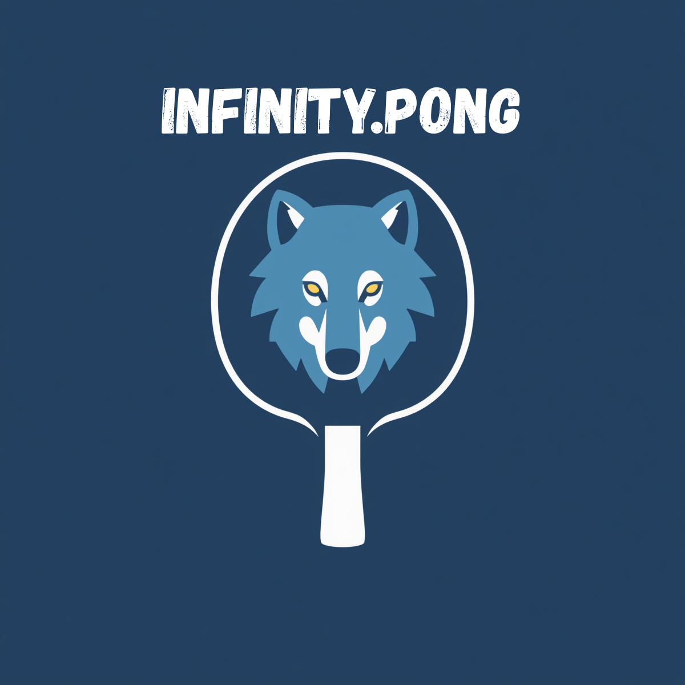
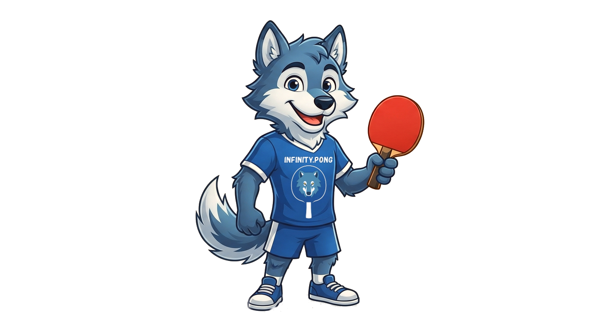

infinity.pong-associação de tênis de mesa


Aula Grátis de Tênis de Mesa
🏓Aula Experimental Gratuita de Tênis de Mesa🏓
Associação infinity-pong
Você já sentiu a emoção de uma partida de tênis de mesa?
Velocidade, estratégia e precisão fazem desse esporte um dos mais empolgantes do mundo.
E o melhor: você pode experimentar tudo isso totalmente de graça!
Não importa se você nunca segurou uma raquete ou se já joga nas peladas de fim de semana.
Esta é a sua chance de evoluir.
Por que você deveria se inscrever?
-
Você nunca jogou?
Nossos professores são especialistas em iniciantes. Vamos te ensinar do zero: pegada, movimento básico e regras. Em menos de 1 hora, você já estará trocando bolinhas e se divertindo muito!
-
Se você já joga, vamos te levar ao próximo nível.
Sente que seu saque não é bom? Que sua defesa é falha? Nossos técnicos corrigem detalhes que você nem sabia que estavam errados. Dicas de ouro para vencer jogos antes impossíveis.
-
Saia do sedentarismo sem sofrer.
Tênis de mesa é o esporte perfeito para saúde sem impacto. Trabalhamos reflexos, coordenação e concentração. Em 60 minutos você se diverte e sai com a energia lá em cima!
-
Conheça a sua nova "família" esportiva.
Na infinity-pong, você não é só um número. Ambiente acolhedor, alunos de todas as idades. Venha fazer amigos, participar de torneios internos e fazer parte de uma comunidade que respira esporte e respeito.
-
Equipamento de primeira linha à sua disposição.
Nada de se preocupar em comprar raquete ou bolinhas. Disponibilizamos todo o material profissional para você testar. Só venha com uma roupa confortável e de tênis!
!VAGAS LIMITADAS!
Turmas reduzidas para atender você com toda a atenção.
As vagas para a aula experimental gratuita estão se esgotando rapidamente.
Não deixe para amanhã a oportunidade de descobrir um novo talento.
Sua próxima grande paixão está a um clique de distância.
🏓se cadastre agora para sua primeira aula gratuita🏓